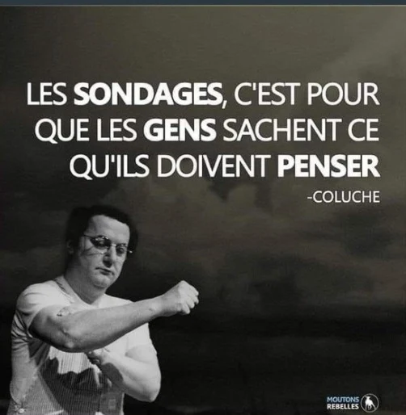

Visuel relayé
Un visuel satirique sur les sondages
Date indiquée par Facebook · 7 avril 2022
Repères éditoriaux
Nous avons relayé ce visuel le 7 avril 2022. Il se moque de la manière dont les sondages peuvent orienter l’opinion et attribue la formule à Coluche. L’image porte la signature Moutons rebelles.

Sources
Archive rouge · document diffusé sur Facebook · AR-0002-FB-01904